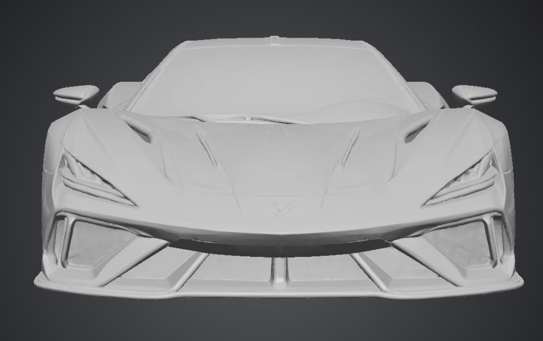
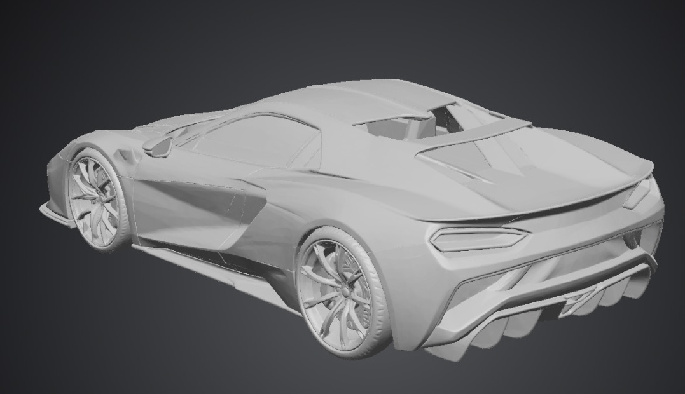

VYREN
VYREN
VYREN / MODEL 001
AURORA
R26
A performance-car concept at the start of its development journey.

DESIGN / 01
SHAPED
FOR PRESENCE.
Low visual mass, a wide stance and strong aerodynamic forms define the current exterior. Details will evolve as the concept moves toward a physical prototype.
DEVELOPMENT STATUS
WHAT EXISTS
TODAY.
01
Exterior concept
Current digital design direction and vehicle identity.
02
3D model
Visual development model used for renders and presentation.
03
Physical prototype
Planned. Engineering and final specifications remain in development.

